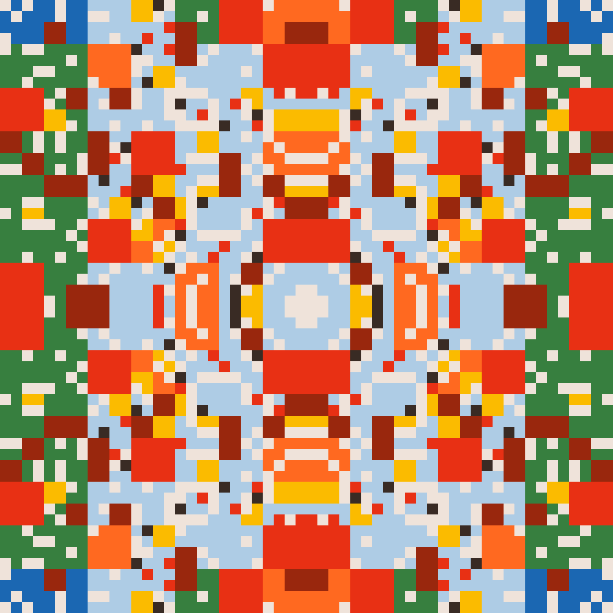
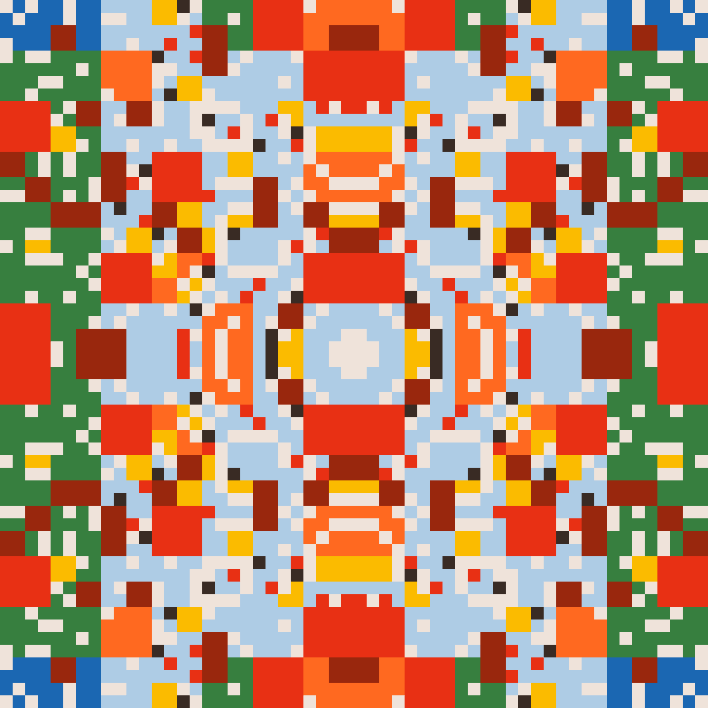
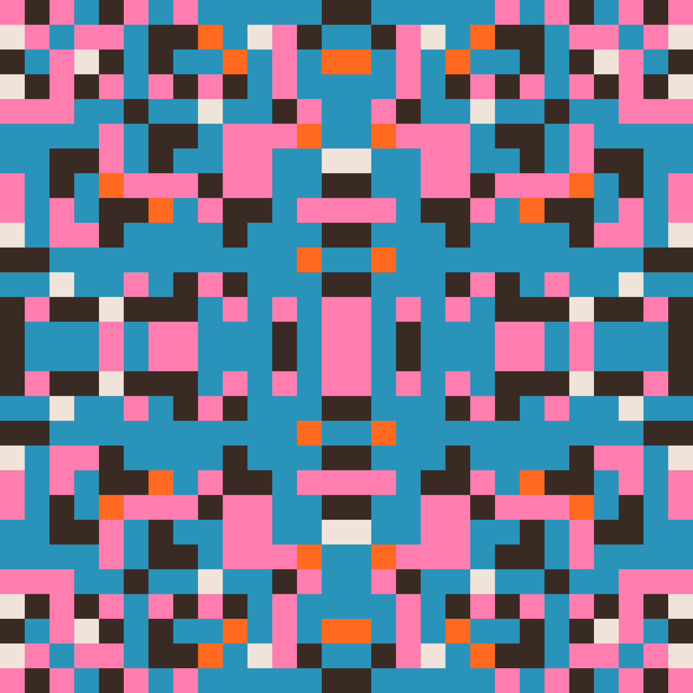
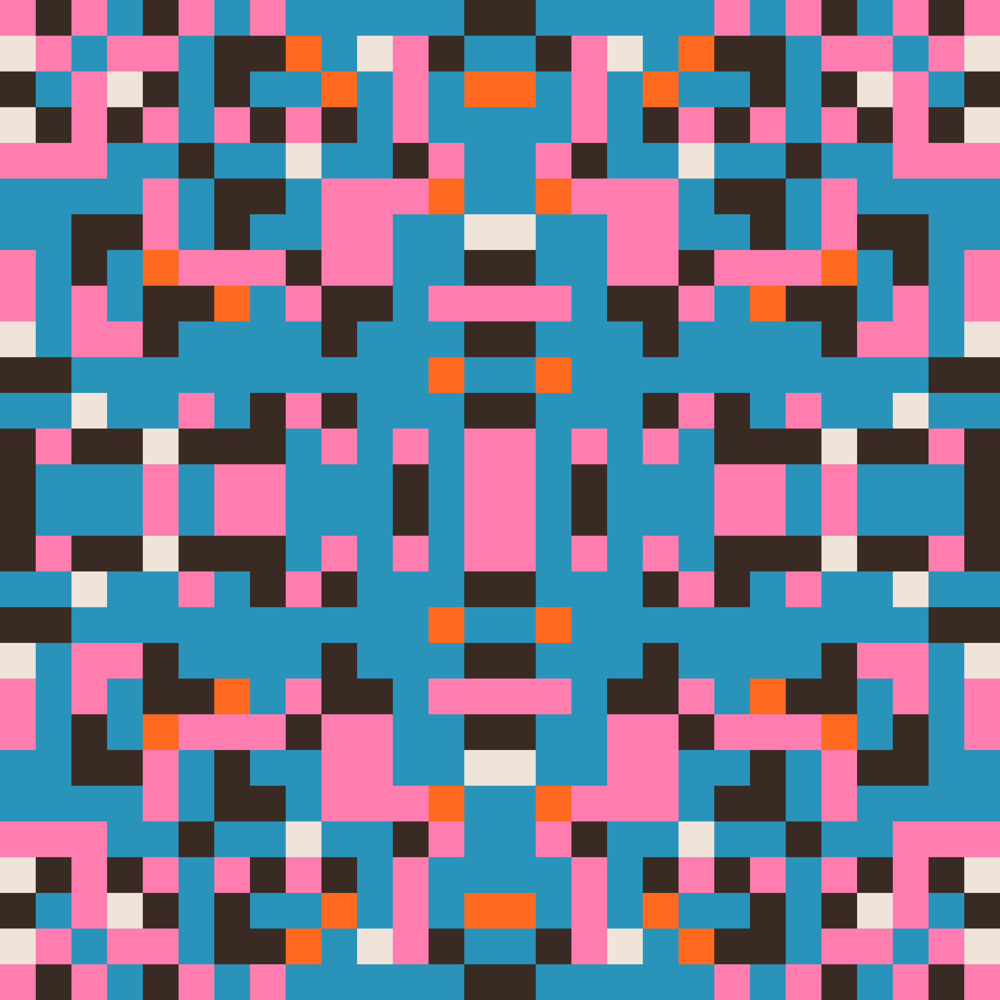

Thread
2025
250 NFTs
JavaScript
Screen responsive size
Artblocks project page
Exhibition(s)
- 2025 Oefenstof (solo exhibtion), Galerie Met, Berlin, Germany
Thread is the long-form generative token collection that compliments my project Oefenstof.
Embroidery is one of the oldest decorative crafts, practiced since the invention of the needle and thread. At some point, embroidery artists realized they needed a way to record and reference different designs. The solution was the creation of the sampler, a piece of cloth decorated with different motifs. Samplers often featured scattered motifs, bands of geometric and decorative borders, animals, floral motifs, and alphabets. Although found across diverse cultures and timelines, similarities can be found across different samplers, often executed in the binary form of a cross-stitch. This duality, stitch or no stitch, resonates with the binary logic of computation.
I have examined the patterns and representations found in embroidery samplers, the act of recording embroidery work, and transformed the traditional patterns through algorithmic processes. Exploring the overlap between traditional embroidery motifs and computer algorithms. This resulted in building my own library of embroidery samplers using custom code and an embroidery machine, that were recorded in my project Oefenstof.
In my experimentation, I applied well-known algorithms such as cellular automata and XOR patterns. Yet, their typical digital aesthetics were obscured by the constraints of the embroidery machine and the unpredictable dialogue between the artist and the computer. Thread makes the underlying patterns visible again.

 


 
